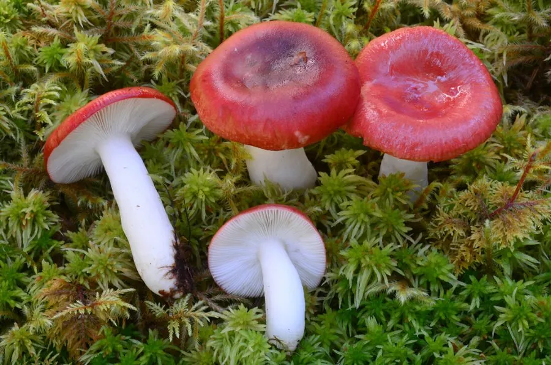

真菌 · 真菌界
毒红菇 Russula emetica

颜色鲜艳、误食后引起剧烈呕吐腹泻的红菇，菌盖樱桃红、菌柄白色，是红菇属中著名的有毒种类，严禁采食。
- 分类
- 门担子菌门纲伞菌纲目红菇目科红菇科属红菇属
- 栖息环境
- 针叶林和阔叶林的地面，与松树、栎树形成外生菌根
- 地理分布
- 欧洲、北美和东亚，中国林区有分布记录
- 保护级别
- 暂无评估（IUCN 未评估，有毒物种）
物种志
毒红菇是担子菌门红菇目的外生菌根真菌，子实体单生或群生。菌盖呈半球形至平展，直径 4–10 cm，表面鲜樱桃红色至砖红色，光滑而黏；菌肉白色，质地脆；菌褶白色至淡黄色，较密；菌柄白色或带淡粉色，圆柱形；孢子印白色。它颜色鲜艳，与一些可食的红菇十分相似。
毒红菇与松树、栎树等树木形成外生菌根，多生于针叶林和阔叶林的地面，夏秋季出菇，在欧洲、北美和东亚都有分布，中国林区也有记录。它含有刺激性毒素，误食后会引起剧烈的呕吐、腹泻和腹痛，是红菇属中著名的有毒种类。因为外形与可食红菇相似，极易误采，所以没有经验的人不要采食任何红色菌盖的野生菌。
形态与习性
- 菌盖直径 4–10 cm，鲜樱桃红色，光滑而黏
- 菌肉白色，质地脆
- 菌褶白色至淡黄色，较密
- 菌柄白色或带淡粉色，圆柱形
- 毒性含刺激性毒素，误食引起剧烈呕吐腹泻
- 辨识与可食红菇相似，极易误采，严禁食用
趣味知识
- 毒红菇颜色鲜艳，与一些可食的红菇十分相似，最容易误采。
- 误食毒红菇后会引起剧烈的呕吐、腹泻和腹痛。
- 不要相信“颜色鲜艳才有毒”或“虫咬无毒”的说法，不认识的菌不要采。